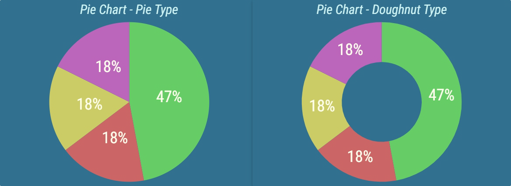
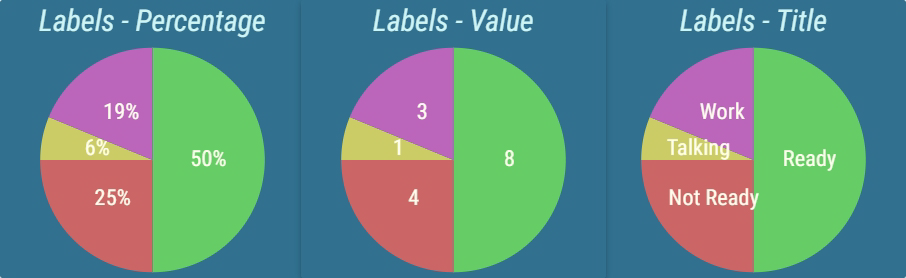
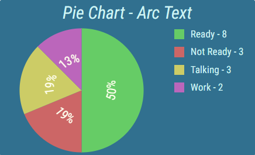
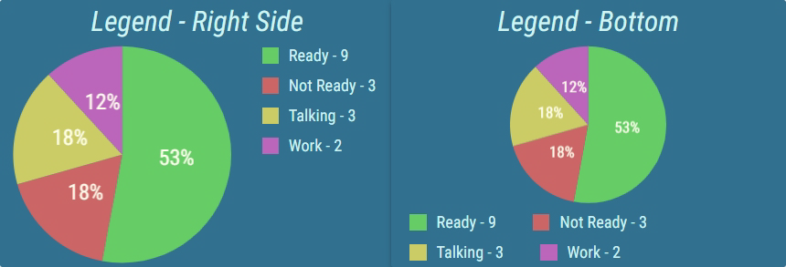

Pie Chart¶
A Pie Chart displays results of several calculations in form of a circular chart. Usually a Pie Chart is used to display the current result of its calculations. However historical results can be displayed too. A year, month, week, day, hour, 30 minutes or 15 minutes historical interval can be chosen. When displaying a historical result, how much the interval should go back in time, can be configured. This way Pie Chart can display values from any number of days ago. For more information about historical intervals see Historical Intervals chapter.
Figure 1: Pie Chart types
Each calculation displayed in the chart is represented by a color. A corresponding section of the chart is reserved for each calculation. The size of each section is proportionate to all other sections, effectively comparing the calculation results. Each section can be accompanied by a label, that represents the name of the calculation, actual result or percentage of the entire chart, that the section takes.
Figure 2: Pie Charts with different label configurations
The appearance and position of this label can be configured. For example labels can be written in arc, for better usage of available space.
Figure 3: Pie Charts with label in arc
A legend can be displayed, that describes the calculation and can provide additional information. The position and size of the legend can be configured.
Figure 4: Pie Chart with legend enabled
For more information about editing this segment, see Pie Chart chapter.